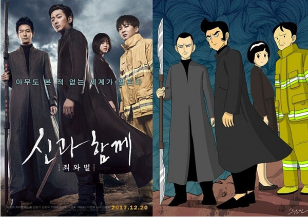

Webtoon in to film

신과함께
주호민 작가의 웹툰을 원작으로 한 영화 '신과함께'는 웹툰의 영화화의 대표작으로 꼽을 수 있다.
제작 과정이 많이 순탄치 않았다고 한다. 6년 동안 시나리오 탈고만 30번이 넘게 됐고 연출은 김용화 감독에게 처음 제의가 갔었지만 김용화 감독이 자신이 없다고
고사한 이후 《만추》의 김태용 감독에게 넘어가 화제가 되었다. 하지만 김태용 감독이 각본을 쓴 신과 함께는 원작의 등장인물들이 단 한 명도 등장하지 않을 정도로
원작과 차이가 있었다고 한다. 그래서인지 2014년 5월, 감독이 김용화 감독으로 돌연 교체되었다.
당시 김용화 감독은 전작 미스터 고가 망해서 우울해 있었는데 연출 제의가 다시 갔고 기술적으로 어떻게 풀어나가야 할지에 대해서 자신감이 생겼고 연출을 맡게 됐다고 한다.
그 이후 또 몇 년을 거쳐서 영화가 만들어진 것. 이전 각본 중에서는 원작과 완전히 똑같이 만들었던 각본도 있었지만 결국엔 다 실패하고 현재의 각본으로 만들어졌다고.
지옥도 7개의 지옥을 형상화 하기 위한 비주얼 콘셉트가 100장이 넘었고 스케치한 그림만 1000장이 넘었다고 한다.
상술했듯 김용화 감독은 《국가대표》와 《미녀는 괴로워》로 초대박을 친 전력이 있지만 이후 《미스터 고》가 대차게 망해서 우려와 기대를 함께 받고 있다.
원작의 저승 편, 이승 편, 신화 편의 요소들이 들어가며, 2016년 4월 촬영을 시작해 두 편을 동시에 찍는다고 한다. 2017년과 2018년에 1, 2부로 나누어 개봉 예정.
그러므로, 캐스팅된 배우들은 같을 것이다. 2014년 12월, 하정우가 캐스팅되었다는 소식이 나왔다.[5] 팬들은 하정우의 외모나 이미지를 고려했을 때에 '진기한'이나
'해원맥' 역할을 예상한다. 김용화 감독은 본 영화를 3부작으로 계획하고 있고 초특급 호화 캐스팅으로 영화를 찍고 싶다고 밝힌 바 있다.
이후 주호민 작가가 JTBC의 시사예능 프로그램인 잡스에 직접 출연하여 2부작이라고 밝혔다.
하정우는 이윽고 강림도령 역할로 확정되었다. 관련 기사 공유와 원빈, 김우빈은 제안을 받았으나 검토 끝에 고사했다고 한다.